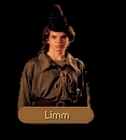

|
|
|  |
|
|
| CHAPTER 1 |
A figure moved in the tunnel. Seemingly having appeared from nowhere, a young boy halted them before they could move any further ahead. LIMM: Who be you and what would you in the Thieves' Highway? LOCKLEAR: I be Seigneur Locklear and I do whatever I will in the Prince's sewers! If you're half as intelligent as you seem then I would advise you step out of our way. LIMM: Fast with a blade I am. Step any further and I'll do you, I will! LOCKLEAR: The only thing you will do my young friend is die an unfortunate death on the point of my sword. I used to spar with Jimmy the Hand and I'm a faster blade than he. Do you still wish to cross me? LIMM: Jimmy the Hand? He's a legend, sire. Next you'll be telling me you've lain with the Empress Lakeisha of Kesh. I'd advise you to be nice like, however cause I got five blokes waiting a little on down to make sure nothing happens to me, see. I don't suppose you've come on behalf of Seigneur James have you? LOCKLEAR: Seigneur James? Then you don't...well, perhaps we have. LIMM: Alright then, down to tacks. If he didn't send you, you'll be answering to the Upright Man and not me, so I wash my hands of it. Just watch your steps down here, as there's a bit of trouble going on down here. G'day. LOCKLEAR: Wait...we don't know our way around down here. LIMM: I look like a bloody page to you? I've got affairs of me own whats I gots to do. LOCKLEAR: Just answer a few questions? LIMM: Right then, so long as you don't ask me anything what might get me in the hots with the Nightmaster. What you want to know? |
| PICKLOCKS |
LOCKLEAR: You wouldn't happen to have an extra set of picklocks laying about, would you?LIMM: Could be I would. That would depend on what you have to offer me, now wouldn't it?
LOCKLEAR: How about a royal pardon the next time you end up in the hands of the City Guard?
LIMM: Oh, that'd be very nice. How about the Prince's palace while you're about it?! I'd have to be cockle-headed and three pence short to buy in on a fib what like you just told. No quicker than you're out the Highway, and you'd have forgotten it in a Mocker minute. You'll have to do better.
LOCKLEAR: How about gold?
LIMM: That's the language. Twenty five gold sovereigns. Take it or leave it?
| YES (enough) | YES (not enough) | NO |
|
LOCKLEAR:
Deal. I'll hand over the money before we leave. LIMM: Then you'll not mind my not handing over the picklocks until I have the money, will you? What's fair, it'n it? |
LOCKLEAR:
Deal's off. Looks like I'm a few coins short. You wouldn't know anything about that, now would
you? LIMM: I'm not a pocket, sire. Bit beyond my skill, though I wouldn't mind the extra clout with the Nightmaster. I specializes in boosts. |
LOCKLEAR:
Given my options, I choose to leave it. I could buy a set of picklocks and a week's rations for
that price. You'll never be a success as a merchant with prices like that. LIMM: Not my ambition. I much prefer it down here if it's all the same to you. |
| GOODBYE |
LIMM:
I'll be off now as I've got business with the Upright Man. You'll have to come and tell me some
more of your fables about Jimmy the Hand. LOCKLEAR: Perhaps we will. Thanks for your help. |

| CHAPTER 2 - FIRST | CHAPTER 2 - SECOND |
|
A figure moved in the tunnel. Seemingly having appeared from nowhere, a young boy halted them before they could move any further ahead. LIMM: No further, you three. This be the Thieve's Highway and not a one among you looks a Mocker to me. Scatter off. JAMES: And what's to keep me from bringing the Krondorian Lancer Corps down here and crashing your gate? LIMM: Same thing as kept every Princes Krondor from doing that very thing. We'd know a week and a day before and have time for a nap in between. While they was tromping about down here, we'd be looting their houses and their barracks and be all the richer for the expedition. JAMES: Fourteen years away and the Mockers are just as I left them. I want you to send word to the Upright Man that Seigneur James needs access to the sewers, just for a few hours. LIMM: Seigneur James? Oh, well now that's different. You've been all the talk about Mocker's Rest for the better part of a two month! The Nightmaster has been right straight that we assist you in whatever manner we could. JAMES: Why is that? LIMM: I'm sure I don't know. I just do as the Nightmaster says. He also said we were to answer any questions you might have. |
A figure moved in the tunnel. Seemingly having appeared from nowhere, a young boy halted them before they could move any further ahead. LIMM: Hello there, Seigneur. The Highway is yours, for the time being anyway. Keep a watch out though for the Crawler's men. |
| ITEMS |
JAMES: Have you taken anything off the men who are posing as Mockers?LIMM: They're not much for carrying treasure, but yeah, I've found a few nice bits. Tumbled a corpse I found near the seagate just this morning...
JAMES: If the price is right, I might be interested in buying the booty from you.
LIMM: That so? Well then, my price is a hundred gold.
JAMES: A hundred gold? You said they don't carry anything of any value.
LIMM: Seems it's of value to you and I say it's worth a hundred sovereigns if it's worth a pence. Deal?
| YES (enough) | YES (not enough) | NO |
|
JAMES:
It's robbery, but we'll take it. LIMM: Good then. I'll get my satchel for you. |
JAMES:
Deal's off. Looks like I'm a few coins short. You wouldn't know anything about that, now would
you? LIMM: I'm not a pocket, sire. Bit beyond my skill, though I wouldn't mind the extra clout with the Nightmaster. I specializes in boosts. |
JAMES:
It's too much to ask when I'm not sure what you have. Sorry. LIMM: Going to take it safe then? Pity. And it felt like a nice load. |
| SILDEN (if Lysle) |
JAMES: We spoke to Lysle Rigger and he told me to tell you that he's confirmed the Upright Man's suspicions, but he says that the Crawler is not Jocko Radburn.LIMM: That at least is a relief. Leastways we know where they're coming from for sure now. Did he tell you anything else?
JAMES: He said something about a reward?
LIMM: I'll give you the seal he asked for, course if you ask me, it's a piddling price for it. Me, myself, I don't think I would've asked for anything less than a shiner, and a good quality one at that.
| FIRST GOODBYE | SECOND GOODBYE |
|
LIMM:
I've got to go and check on a few things on the other end of the tunnels, so I'll be off now.
Mind you don't go pinching on my territory. JAMES: Your territory is quite safe with us, be assured. Tell the Upright Man that James says hello. |
JAMES:
We need to be moving on now, Limm. Thanks once again for your help. LIMM: If you were truly grateful, you'd tell me how it is to get into that palace of Arutha's so as I could get me a few shiny bits. JAMES: I'll pretend I didn't hear that and we'll call it even. Take care of yourself, Limm. |

| CHAPTER 3 - FIRST | CHAPTER 3 - SECOND |
|
A figure moved in the tunnel. Seemingly having appeared from nowhere, a young boy halted them before they could move any further ahead. LIMM: You'll have to be about your business elsewhere, blokes. I'm not to lets so much as a gnat past me tonight or any night soon or for any amount of money. The Thieve's Highway is closed. JAMES: What, not even for a tax? Something fairly serious must have happened down here. LIMM: If you're any friend of the Mockers, you'll understand what I mean when I tell you it's a matter of family business. Meeting at Mocker's Rest. JAMES: The Upright Man? LIMM: You haven't heard it from my lips. I'm just a night watch and a stupid one at that. JAMES: I understand. Who do you think was responsible? LIMM: Same one as clapped hands on you a few months back. Whoever it was must have had a hand on the inside. The Upright Man was poisoned. In the Rest they're calling him The Crawler - still don't know what exactly he hopes to gain. We'd never submit to him after all he's done to us. Sooner see him dead than in charge of things. |
A figure moved in the tunnel. Seemingly having appeared from nowhere, a young boy halted them before they could move any further ahead. LIMM: Until I receives word this gate can open again, you can't enter the sewers. Sorry, Seigneur. Now please be off with you. JAMES: Presently, I'm not so much interested in the sewers as I am in what's between your ears. I'd like to ask you a few questions if I could..., pick your brain. LIMM: Can't see any harm in it, so long as you're not trying to trick your way past. What you want to know? |
| KEYS |
JAMES: How many keys do you have on your ring?LIMM: Good thief don't need 'em. I knows when somebody left a shutter on the spring or a door off the latch. Got a keen eye. I'm all the better without having to depend on them as I see it. I'm probably the best thief what the Upright Man's ever seen and I know I'm already the quietest.
JAMES: Is that so? How interesting. Well. Would you know how to get hold of Yellow Bill? Perhaps he could sell us a few keys.
LIMM: Bill? What, you talking about Old Bill? He got done down not more than a month ago by the rogues sent by the Crawler.
JAMES: Pity. He was a good man in his own way... Who else could we get keys from?
LIMM: I have a key.
JAMES: I thought you said good thieves didn't need them.
LIMM: I don't need it, I just happen to have one at the moment. Found it near the dead body of someone dressed like a Death Guilder. He was an ugly bloke, but then again, with half his head smashed in...
JAMES: Spare me the details, please. How much you want for the Nighthawk key?
LIMM: It's yours for nothing. I don't like carrying it about and I don't want to bring bad luck off it on meself. Take it. Don't ever say Limm never done nothing for you.
| STEALTH |
JAMES: You say you're the quietest thief in Krondor. Prove it.LIMM: Why should I?
JAMES: We have business that may require great stealth on our part and some of us could use instruction. Would you be willing to teach us what you know?
LIMM: For the right price, I'll steal the crown right off the Prince's head and it'll be half a day before he'll even know it's gone. Sounds interesting. How about a hundred and twenty sovereigns? That sound reasonable to you?
| YES (enough) | YES (not enough) | NO |
|
The thief nodded. Dropping to a crouch, he pointed down the length of the tunnel and instructed James to walk away and then return. "Common problem. You're coming down too much on your heels," Limm said, watching as his pupil reappeared from the darkness. Grabbing James's foot, he pivoted it so that it rocked from side to side rather than rear to front. Imagine your feet are like waves. You have to let 'em roll. Down on the outside, then roll to the center. Now go down and back. We'll keep this up 'til you have it." After a few more trials, James began to catch on to the technique. "Astonishing how much of a difference it makes. I could barely hear myself." "That's it then," Limm said with a smile, taking his fee. I've got to get back to my guard duty. We can still chat a bit if you like." |
JAMES:
It sounds reasonable but it is also beyond my reach at the moment. Perhaps I can come back and
take the lesson later? LIMM: Providing you can find me, take it any time you like. |
JAMES:
It's not an unreasonable sum, but I think I'll pass on it at the moment. LIMM: Shame, really. You could use the lesson. I could hear you coming quite a ways before you got to me. |
| LOCKED DOOR |
JAMES: I've heard there's a portcullis down here that none of the Mockers can open. Can't pick it, can't break the lock. Is it true?LIMM: Might be. Might be pigs can fly, who's to say? Why you interested? You're no son of the sewers. How did you hear about it, anyaways?
JAMES: Let's just say I'm a friend of the family. I was just wondering if anyone ever found a key for it.
LIMM: Isn't no key I know of, least not one a body's snitched about. If you want my opinion, there's nobody what can get the eternity gate opened. Impossible.
| UPRIGHT MAN |
JAMES: Are you certain the Upright Man is dead?LIMM: So the Nightmaster says.
JAMES: He used to have an Amulet that would...he kept for good luck. Does anybody know what became of it?
LIMM: Need a bit of extra good luck, eh? But who doesn't? So happens I gots the Amulet. The Nightmaster slipped it to me after I saved his behind from a pair of the Crawler's toughs. He didn't think it was worth too much but I thought I knew different. Three hundred sovereigns and it's yours? How's that strike you?
| YES (enough) | YES (not enough) | NO |
|
JAMES:
Where it hurts, that's where it strikes me. All right, I'll take the Amulet. LIMM: Done! Believe you me, you won't be disappointed. |
JAMES:
I think I'm going to have to forget it. LIMM: What you doing, trying to back out a deal what's already done? This some trick? JAMES: It's no trick. I simply don't have as much as I thought. |
JAMES:
It strikes me badly. No deal... LIMM: Your loss, lord. It's a fine piece if ever I've laid two eyes on anything, but a body's always got the right to say no, eh? That's what the Great Freedom is all about, it'n it? |
| FIRST GOODBYE | SECOND GOODBYE |
|
JAMES:
We need to be moving on now, Limm. Thanks for your help. LIMM: Such help as it was, but you're welcome to it. G'day, lords. JAMES: And to you. Watch that the Crawler's men don't do you in as well. |
JAMES:
We need to be moving on now, Limm. Thanks once again for your help. LIMM: Such help as it was, but you're welcome to it. G'day, lords. JAMES: And to you. Watch that the Crawler's men don't do you in as well. |

| CHAPTER 6 - FIRST | CHAPTER 6 - SECOND |
|
A figure moved in the tunnel. Seemingly having appeared from nowhere, a young boy halted them before they could move any further ahead. LIMM: You're in Mocker territory. I'd advise you turn about and leave before I'm forced to do you a good bit of harm. OWYN: Please, if you could just answer a few questions for us then we will be out of here. LIMM: Questions?! Only thing as concerns me is getting the mess from the storm taken care of and getting us all back on our collective feet. Ordinarily we don't objects to a storm nows and then - cleans the smell out if you know what I mean. But this storm, it did us a piece all right. Water come in from the seas and washed a score of us into the ocean, destroyed our headquarters and ruined our plan to take care of a little local problem. And we almost had him. OWYN: Him? Who did you almost have? LIMM: The Crawler, that's who, not that it concerns you anyway. Once he had the Upright Man out of his way, I guess he decided that it was time to come round and claim his prize. We had other ideas course. We had a handy little trap all baited for him, one such like he couldn't refuse. Would have had him scurrying back to the Sunset Isles or wherever else in the seven lower hells he came from. Unfortunately the weather didn't cooperate with our little plan. OWYN: Are any of your Mockers magicians? LIMM: No, at least none that admits it freely. Sooner cut a magician's throat than let him among us, but if truth be known we would have welcomed one this past few months. Some of the Crawler's men are magic types. OWYN: Are they? Any of them left down here? LIMM: Who's to say? We're still picking through our own dead, much less worried about which of them were still here. Large portions of the sewers are collapsed. There's even word that when a portion of the sea wall collapsed, it opened a new stairwell to a lower level of the sewers. |
A figure moved in the tunnel. Seemingly having appeared from no where, a young boy halted them before they could move any further ahead. LIMM: Look, unless you're willing to help clean up this mess down here, I'd shag a behind to get out of here. I'm not the type as to kill people I don't know at the drop of a hat, but not so many of our Mocker brethren are so agreeably disposed. Get my meaning? Split before you get split. OWYN: Could we at least ask you a few questions? LIMM: Sounds to me like you just did... What you want to know? |
| IDOL OF LASSUR (if Kat) |
OWYN: What do you know about an object called the Idol of Lassur?LIMM: Some sort of kid story, it'n it? About a whizit or other what gives you the power over the Goddess of Death, or some such silliness.
OWYN: Why would anyone be looking for it in Krondor?
LIMM: Part of the story, as I remember it. It was supposed to have been hidden away in some deep and secret part of the sewers by this Keshian, what? Something like that. But it's not real, I can guarantee that. If it'd existed, the Mockers would have found it by now.
| FIRST GOODBYE | SECOND GOODBYE |
|
GORATH:
I think it is time we left, Owyn. LIMM: Do what you like, pointy ears, just get out of the sewers afore someone decides to make a meat pie out of you. GORATH: Believe me, I have no burning desire to stay down here. I for one will be quite happy if I never see the underside of Krondor again. Goodbye, Limm, and good luck. |
OWYN:
I think we've learned enough for the time being. LIMM: Surprised your head hasn't popped open, all the knowledge you've got up there. Have to be a right genius. OWYN: Goodbye, Limm. Try not to steal anything that you can't carry. |